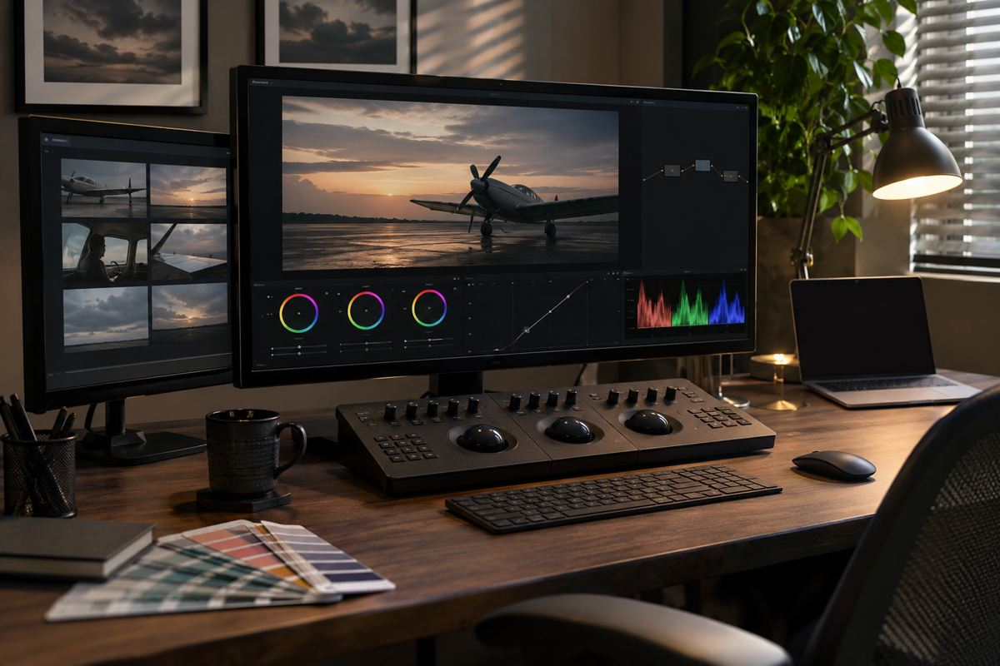

전자기기 / EXPLAINED
ASUS, 어도비 MAX에서 통합 메모리 128GB급 소형 제작 PC 공개
ProArt GR1X 전시는 로컬 AI 작업과 여러 화면을 쓰는 제작 환경을 겨냥했다.

ASUS가 11월 10~12일 열린 어도비 MAX 2026에 ProArt GR1X를 선보였다. 프레스룸에는 11월 11일자로 실렸으며 보도자료 본문은 타이베이 11월 10일을 발표 기준일로 적었다. 소형 데스크톱 GR1X의 핵심은 엔비디아 RTX Spark 플랫폼과 최대 128GB의 통합 메모리다. 전시 일정과 일반 소비자가 실제로 주문하고 받을 수 있는 일정은 따로 봐야 한다. 회사는 이 발표에서 GR1X의 지역별 가격이나 출고일을 제시하지 않았다.
ProArt는 ASUS가 영상·사진·디자인 제작자에게 내놓는 제품군이다. 노트북과 디스플레이도 포함한다. 이번 공개에서는 P16과 P14 등 휴대형 제품과 함께, 책상 위에 두고 외부 화면과 연결해서 쓰는 GR1X를 배치했다. 작업 공간이 좁아도 여러 화면을 두는 제작자는 본체 크기뿐 아니라 외부 모니터와 저장장치, 소음 관리까지 한꺼번에 따져야 한다. 본체가 작다는 정보만으로 특정 프로젝트의 처리 속도를 견적 내기는 어렵다.
통합 메모리는 CPU와 GPU가 하나의 메모리 풀을 공유하는 구조다. 분리형 그래픽카드를 사용하는 PC에서는 시스템 RAM과 그래픽 메모리의 용량을 따로 확인한다. GR1X의 최대 128GB는 두 프로세서가 접근하는 전체 용량 기준이다. 운영체제와 편집 앱이 쓰는 몫을 빼면 모델이나 영상에 할당할 수 있는 크기는 달라진다. 얼마나 빨리 데이터를 읽고 처리하는지는 메모리 대역폭, 연산 자원, 냉각, 앱의 최적화에 따라 달라진다. 구입 후보를 비교할 때는 총 메모리와 실제로 한 작업에 쓸 수 있는 용량을 각각 확인해야 한다.
회사가 제시한 제작 환경에는 어도비 도구와 ComfyUI 같은 로컬 생성 작업이 포함된다. ComfyUI는 이미지 생성 절차를 여러 노드로 연결해 조립할 수 있는 도구다. 모델과 중간 결과를 장치에 올려 반복 실행하는 경우 메모리 여유가 작업 범위를 바꿀 수 있다. 예를 들어 영상 편집 프로그램을 열어 둔 상태에서 이미지 생성도 병행하면 둘 다 같은 풀을 사용한다. 한 번의 시연이 다른 모델, 해상도, 프로젝트에서도 동일한 속도를 낸다는 근거는 공개되지 않았다.
전시가 주목한 또 다른 작업은 여러 화면을 나눠 쓰는 제작이다. ASUS는 4K 120Hz QD-OLED인 PA27UCDV와 12G-SDI를 갖춘 4K PA16USV 같은 디스플레이를 소개했다. 앞의 120Hz는 초당 화면 갱신 횟수이고, SDI는 전문 영상 장비 사이에서 신호를 보내는 연결 규격이다. 사무용 화면이 연결되는지와 카메라·영상 장비의 신호를 현장에서 받을 수 있는지는 별개의 문제여서 입력 규격을 연결 대상별로 대조해야 한다.
편집부는 이 제품에서 가장 확인할 가치가 큰 지표를 장시간 작업 중 속도와 소음으로 본다. 같은 용량의 메모리라도 짧은 이미지 생성과 긴 영상 출력이 요구하는 냉각 조건은 다르다. 실제 판매 구성과 전력·소음 측정, 앱 버전별 호환성 자료가 나와야 전시에서 소개된 작업 흐름을 다른 소형 워크스테이션과 비교할 수 있다. 한국 판매 일정은 이번 자료에서 확인되지 않았다.